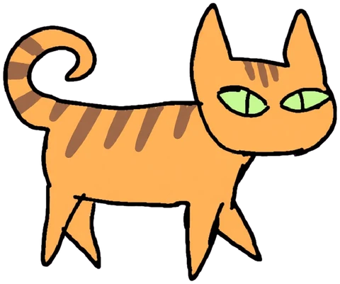

Dina Beat¡Piii! que Dina no se coma la torta


Sofi
🏃 Dina RunDibujos de Sofía © · Silbato, rociador y música hechos con código · Un juego de Leandro

Dibujos de Sofía © · Silbato, rociador y música hechos con código · Un juego de Leandro
Vas a escuchar 16 golpes. Tocá el botón grande justo con cada golpe, guiándote por el sonido. Usá los auriculares o el parlante con los que jugás. Los primeros 4 golpes son para agarrar el ritmo.
Sirve música (mp3, m4a, wav, ogg) o una partitura MIDI (.mid). Queda guardada solo en este dispositivo para volver a jugarla, y no se sube a ningún lado. Usá canciones que tengas permiso para usar.
¿Cómo te llamás? Lo va a ver la persona que desafíes.
Tocá 🔴 y después tocá el botón al ritmo, donde quieras que aparezca Dina. Deslizá la tira para avanzar o retroceder (con dos dedos, acercás); arrastrá una nota para correrla. 🧲 las pega al pulso.
Tocá un cuadrito para poner una nota: cada columna es un golpe. Las notas que pongas son las que vas a tener que espantar.